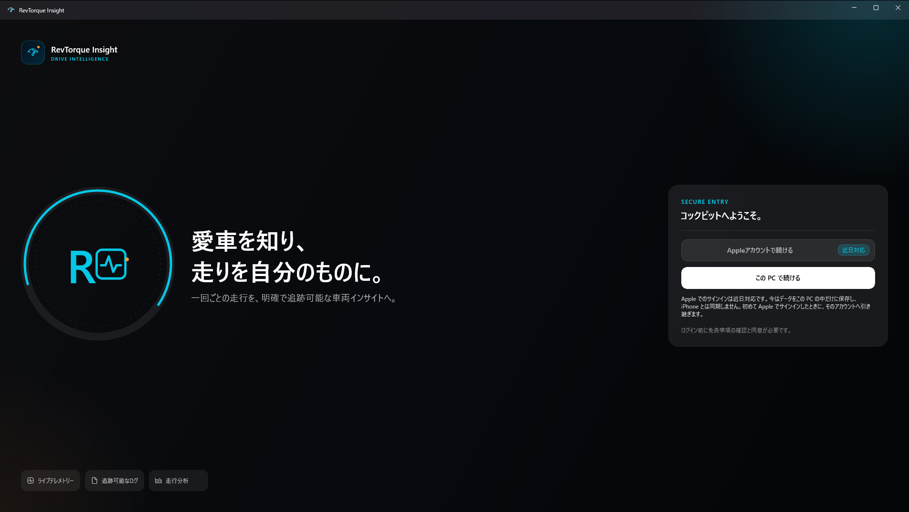
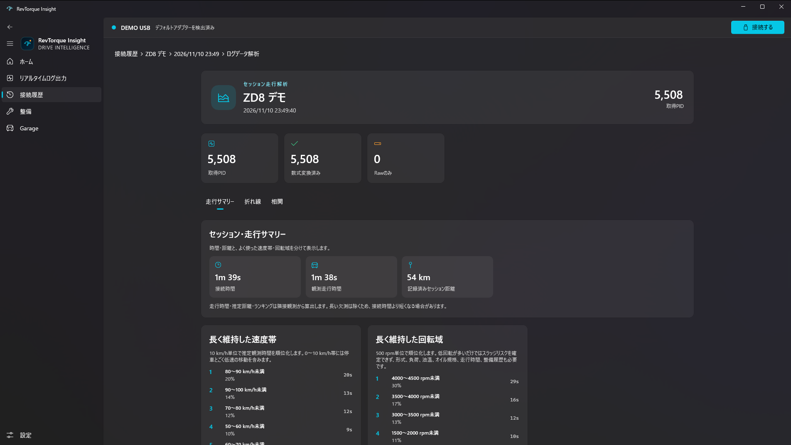
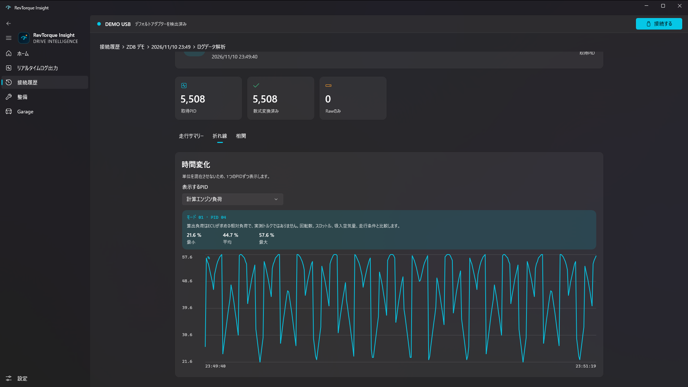
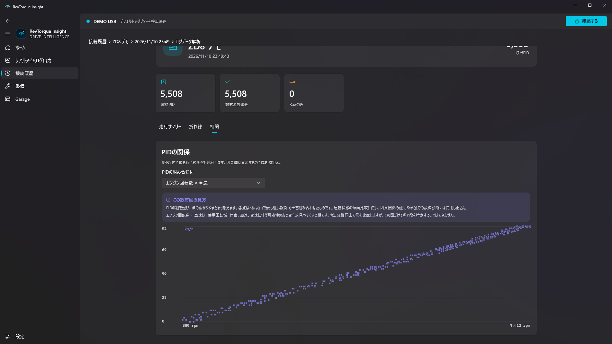
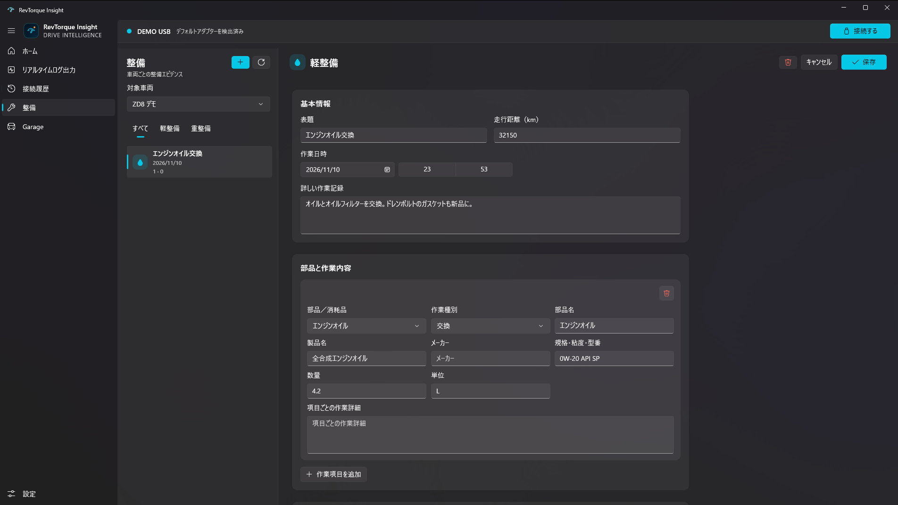

- 運転中はアプリを操作しないでください。操作や確認は、安全な場所に停車してから行ってください。
- 表示する値は車が返す値にもとづく参考値です。故障の診断や安全を保証するものではありません。
- 本アプリは現在ベータ版です。
PREPAREご用意いただくもの
Windows の PC
Windows 10（バージョン 1809）以降、または Windows 11。Microsoft Store から入手します。
OBD2 アダプター
USB・Bluetooth・Bluetooth LE の ELM327 互換アダプター、OBDLink EX / MX+ など。
OBD2 端子のある車
運転席の足元などにある OBD2 端子にアダプターを差し込みます。
GET STARTEDはじめかた
初めて起動したときの流れです。2 回目以降は、ホームで 接続する を押すだけで始められます。
-
アプリを起動し、この PC で続ける を選ぶ
アカウントは不要です。データはこの PC の中だけに保存されます。（Apple アカウントでのサインインは近日対応予定です）
-
重要事項と免責事項を読み、同意して続ける を押す
ご利用の前に一度だけ表示されます。
-
ホームの アダプターを設定 から、使うアダプターを選ぶ
設定画面の「プライマリーアダプター」に、見つかったアダプターが一覧で出ます。使うものを選んで このアダプターを設定 を押すと、次回からの既定になります。試すだけなら「DEMO USB」を選んでください。
-
車のエンジンをかけ、接続する を押す
画面上部の接続バーか、ホームから接続できます。どの画面にいても接続・切断ができます。
-
はじめての車は登録する
車両識別番号（VIN）で車を調べ、この車両を登録する を確認します。登録すると、その車で応答する信号（PID）の一覧が作られ、記録が始まります。

ADAPTERSアダプターのつなぎ方
お使いのアダプターの種類に合わせて、PC とつないでからアプリで選んでください。
| 種類 | 対応する機器の例 | つなぎ方 |
|---|---|---|
| USB | ELM327 互換、OBDLink EX | USB ケーブルで PC につなぎます。COM ポートとして認識されれば一覧に出ます（115200 bps）。 |
| Bluetooth | OBDLink MX+ など（SPP） | 先に Windows の「設定 › Bluetooth とデバイス」でペアリングしておきます。ペアリング済みの機器が一覧に出ます。 |
| Bluetooth LE | UART サービスを持つ ELM327 互換 | ペアリングは不要です。アダプターの電源を入れ、PC の近くで一覧から選びます。 |
| デモ | DEMO USB など | 機器は不要です。模擬の車につながります。 |
Bluetooth LE のアダプターを既定にしておくと、そのアダプターが近くに来たときに、画面の上に「接続しますか？」というお知らせが出ます。
SCREENS画面ごとの使い方
左のメニューから画面を切り替えます。設定はメニューのいちばん下にあります。
ホーム Ctrl+1
- アダプターの状態と、接続・切断のボタンがあります。
- 初めての方は、ここの アダプターを設定 から始めます。
リアルタイムログ出力 Ctrl+2
- エンジン回転数と車速を大きく表示し、その下に車が応答したすべての信号の現在値を並べます。
- 「エンジン」「温度」「燃料・吸排気」「走行・操作」「稼働・診断」の分類ボタンで絞り込めます。
- 各値の ⓘ を押すと、その信号の意味を確認できます。
- 別の画面を開いていても、接続している間は記録を続けます。
接続履歴と分析 Ctrl+3
- 接続してから切断するまでが、1 回分の「セッション」として残ります。車 › 日時 の順に開いて詳細を見ます。
- 上部のパンくず（例：接続履歴 › ZD8 デモ › 2026/11/10 23:49）で、ひとつ前の階層に戻れます。
- セッションの詳細から「ログデータ解析」を開くと、次の 3 つのタブで振り返れます。



整備 Ctrl+4
- オイル交換などの整備を、車ごとに記録します。上の ＋ ボタンで新しい記録を作ります。
- 表題・走行距離・作業日時・作業の内容に加えて、部品や消耗品（製品名・規格・数量など）を項目ごとに残せます。
- 「すべて／軽整備／重整備」で絞り込めます。入力が終わったら 保存（Ctrl+S）を押します。

Garage Ctrl+5
- 登録した車の一覧です。車名やメーカーなどの情報と、写真を登録できます。
- 車ごとに、どの信号（PID）を記録するかを「PID 収集設定」で選べます。
設定 Ctrl+,
- プライマリーアダプターの選択、外観（ライト／ダーク）、表示言語（日本語・English・Español）を変更できます。
- 「アカウントを削除」で、このアプリに保存した走行ログや設定を消去できます。
SHORTCUTS便利な操作
- Ctrl+1〜5
- ホーム〜Garage の各画面へ移動
- Ctrl+,
- 設定を開く
- Alt+←
- ひとつ前に戻る（マウスの戻るボタンでも可）
- 右クリック
- セッション・整備記録・車両のメニューを開く
- Ctrl+S
- 整備記録・車両の編集を保存
- F5
- Garage と整備の一覧を更新
ウインドウを広くすると、接続履歴ではセッションの一覧と詳細が左右に並びます。
DATA & PRIVACYデータとプライバシー
車両の情報、走行ログ、整備記録、設定は、お使いの PC の中だけに保存されます。現在の版では、これらを開発者やほかのサーバーへ送信しません。広告や利用状況の分析も行いません。
iOS 版の RevTorque Insight との iCloud 同期は、近日対応予定です。対応する際は、送信する情報と送信先をプライバシーポリシーでお知らせします。
アプリをアンインストールすると、この PC に保存したデータ（整備記録を含む）はすべて削除されます。
FAQよくあるご質問
アダプターが一覧に出てきません
USB の場合は、ケーブルを挿し直し、Windows のデバイス マネージャーで「ポート (COM と LPT)」に表示されているかをご確認ください。表示されない場合は、アダプターのメーカーが配布しているドライバーが必要なことがあります。
Bluetooth（SPP）の場合は、先に Windows の設定でペアリングしてください。Bluetooth LE の場合は、アダプターの電源が入っていて PC の近くにあるかをご確認ください。
接続できても値が表示されません
エンジンがかかっているか（少なくともイグニッションがオンか）をご確認ください。車によって応答する信号の種類は異なり、応答しない信号は表示されません。
走行中の記録は、ほかの画面を見ていても続きますか？
はい。接続している間は、どの画面を開いていても記録を続けます。記録は 切断する を押すと 1 つのセッションとして保存されます。
PC のスリープで記録が止まりませんか？
接続している間は、アプリが PC のスリープを抑えます。ノート PC の場合は、電源につないでのご利用をおすすめします。
表示言語を変えたい
設定の「言語」から、日本語・English・Español を選べます。すぐに切り替わります。